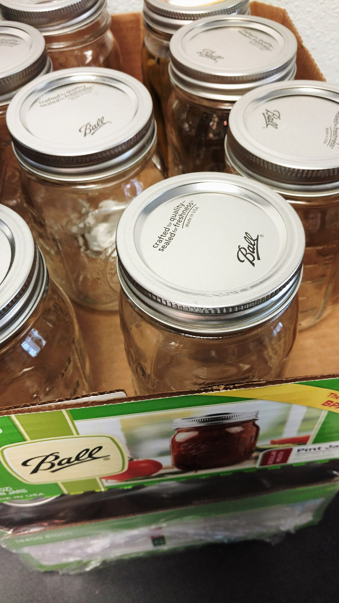
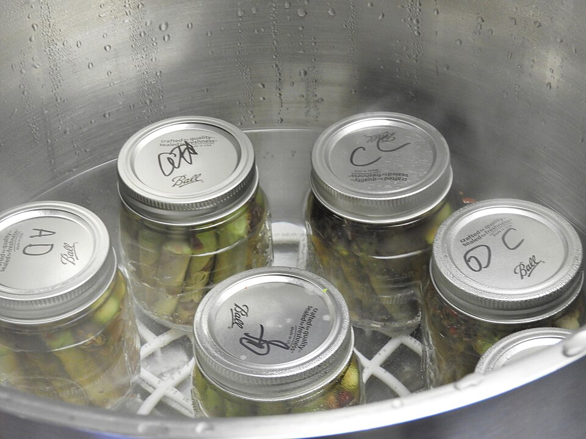

Use a current, research-tested recipe from the National Center for Home Food Preservation (NCHFP), USDA or a university extension. Follow its exact ingredients, preparation, jar size, headspace, processing method, time and altitude adjustments. This overview is not a recipe or a substitute for one.
Improperly canned food can cause botulism, a potentially fatal illness. A sealed lid, normal appearance or a pleasant smell does not prove food is safe. Never taste suspect food.

Why tested recipes matter
Acidity, density, jar size, heat penetration and processing time all affect safety. Do not invent canning recipes, scale ingredients freely or add extra vegetables, oil, flour or thickeners unless the tested recipe permits it.

Altitude changes the process
Water boils at a lower temperature at higher elevations. Find the elevation at your home and use the exact time or pressure adjustment specified for your recipe and equipment.

When in doubt
Do not eat or taste food of uncertain safety. Follow the NCHFP’s disposal instructions for suspect jars, especially low-acid foods, or contact your local extension office.